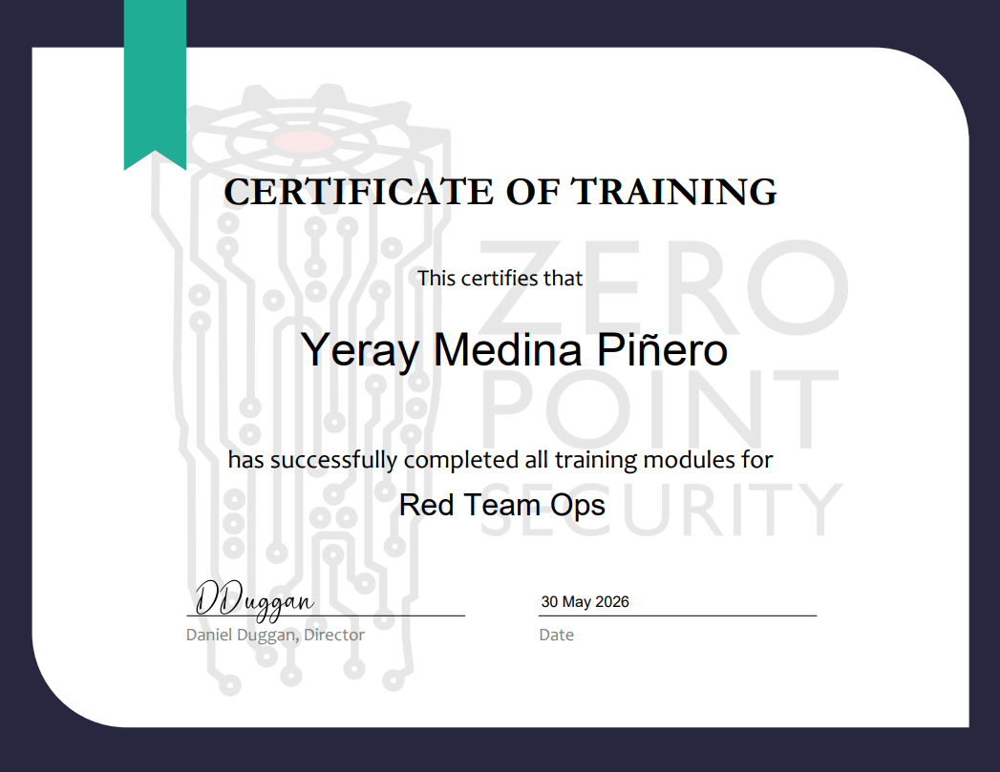
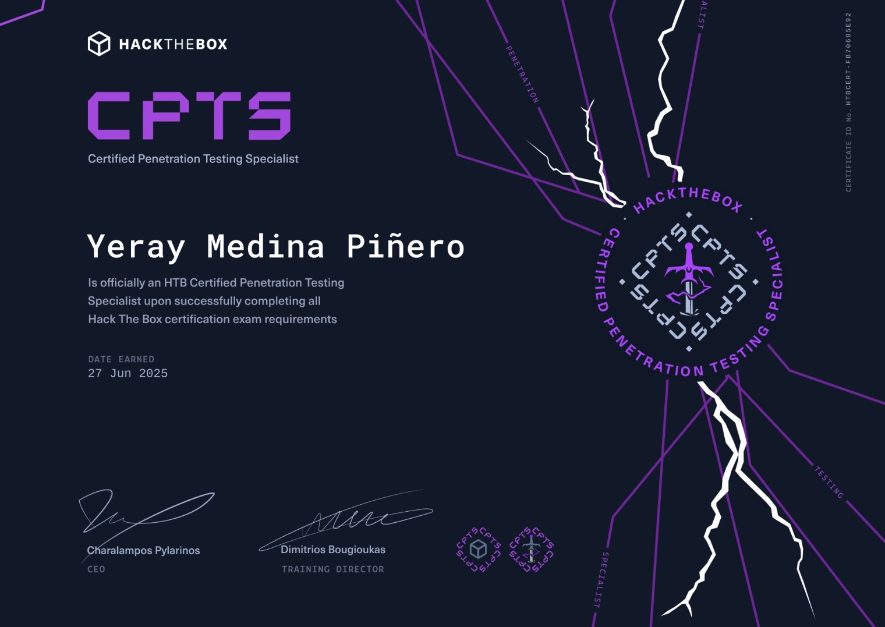
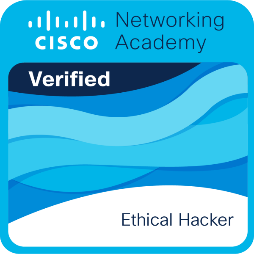
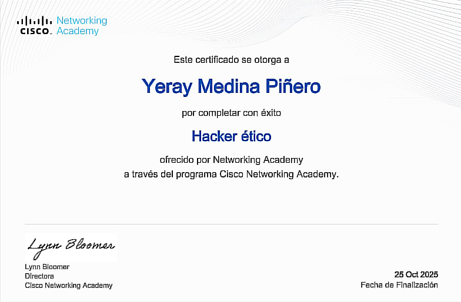
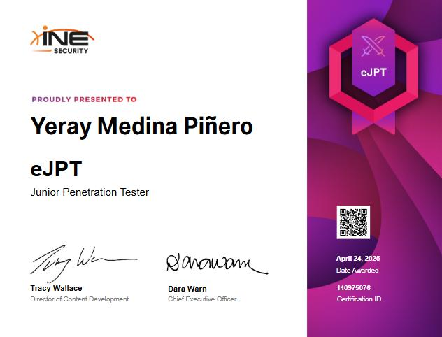
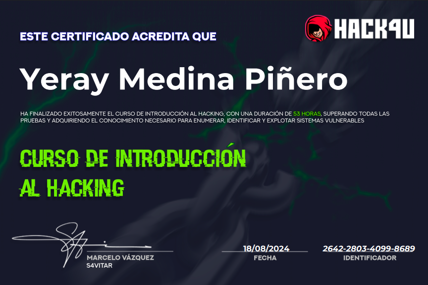
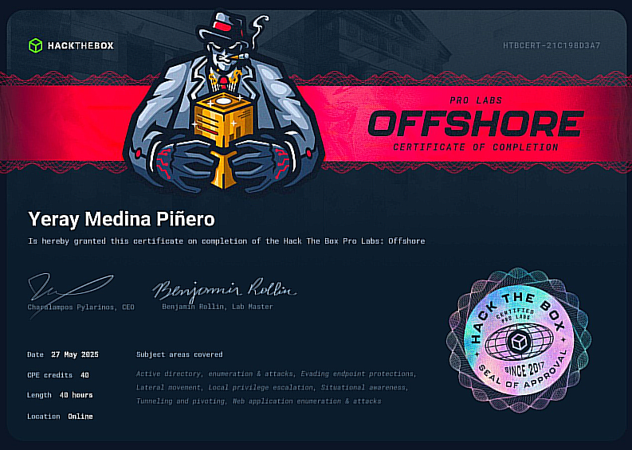
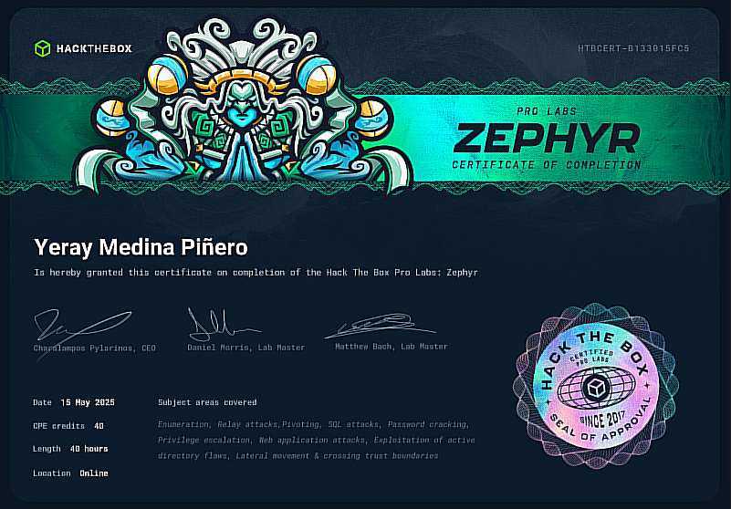
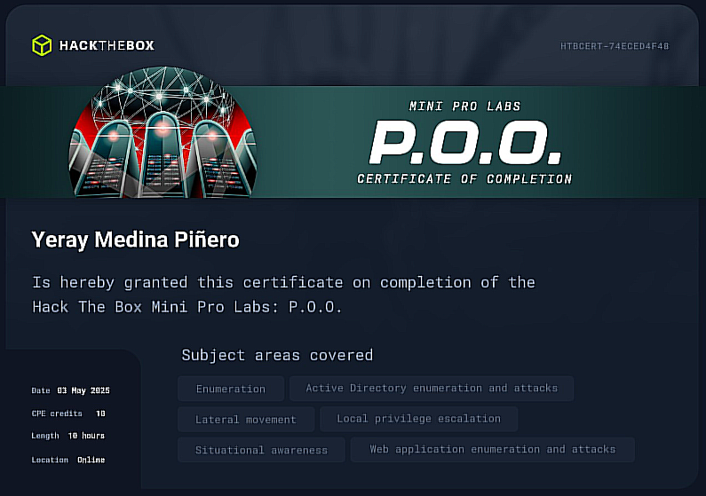

Yeray 'JBKira' Medina Piñero
Cybersecurity Specialist || Penetration Tester
Yeray 'JBKira' Medina Piñero
Cybersecurity Specialist || Penetration Tester
All Certifications
Complete collection of all certifications obtained with their respective details
Logo:
Name:
Obtained Date:
Details:
Skills:
View Certificate:

CRTO (Pending Exam)
Pending Exam (All training done)
The CRTO (Certified Red Team Operator) is an advanced, hands-on red teaming certification focused on Active Directory attacks, adversary simulation, C2 operations, lateral movement, post-exploitation, and defense evasion techniques.


CPTS
June 2025
The CPTS by HTB Academy is an advanced, hands-on penetration testing certification focused on Active Directory, web hacking, privilege escalation, enumeration, exploitation, and the ability to create professional, commercial-grade penetration testing reports.

English B2
April 2025
A B2 English level demonstrates an upper-intermediate ability to communicate effectively in English, both verbally and in writing, in professional and everyday situations.
Certificate has not arrived yet. Send me an email if you need a proof of completion.

Cisco Ethical Hacker
October 2025
The Cisco Ethical Hacker certification is a hands-on cybersecurity certification focused on ethical hacking methodologies, reconnaissance, vulnerability assessment, exploitation, and fundamental penetration testing techniques.


eJPTv2
April 2025
The eJPTv2 is an entry-level, hands-on penetration testing certification that validates practical offensive cybersecurity skills.

Hack4u Introduction to Ethical Hacking
April 2024
The Hack4u Introduction to Ethical Hacking certification focuses primarily on web attacks, while also covering Linux attacks, privilege escalation, buffer overflows, pivoting, and fundamental penetration testing techniques.


Offshore Pro Lab
May 2025
The Offshore Pro Lab by HTB is an advanced, hands-on penetration testing lab focused on realistic enterprise infrastructure, Active Directory, web attacks, privilege escalation, pivoting, lateral movement, and advanced offensive security techniques.

Zephyr Pro Lab
May 2025
The Zephyr Pro Lab by HTB is an advanced, hands-on penetration testing lab focused on complex enterprise environments, Active Directory, web exploitation, privilege escalation, pivoting, lateral movement, and advanced red teaming techniques.

P.O.O. Pro Lab
May 2025
The P.O.O. Pro Lab by HTB is an intermediate, hands-on penetration testing lab focused on realistic enterprise environments, Active Directory attacks, web exploitation, privilege escalation, pivoting, lateral movement, and advanced offensive security techniques.

© 2026 Yeray Medina Piñero. All rights reserved.